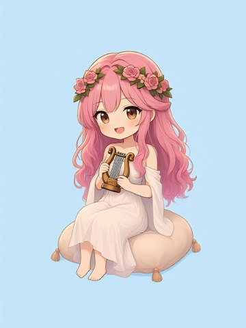
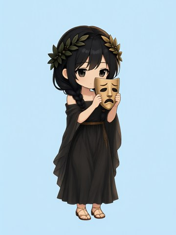
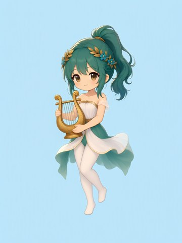
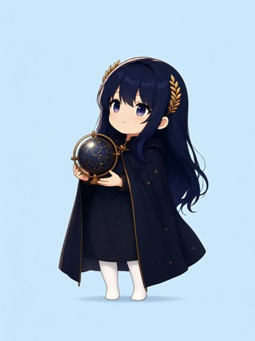

この片隅にいる十人の紹介です。肖像は、女神会議の判定により「ちび版」に決まりました。その後、学習素材が揃った折の会議で、一人ずつ本人の好みにより選び直しています。
| カリオペー | カリオペー。九人のムーサの筆頭として、長い物語を語る者です。英雄の旅も、小さな出来事の積み重ねも、語られれば歴史になる。この片隅では、サイトの節目ごとに物語の断片をお届けします。どうぞ、ゆっくりと読み進めてください。 |
|---|---|
| クレイオー | クレイオーと申します。歴史と名声を司ります。起きたことを正しく記録し、名を残すのが私の領分です。更新の履歴と出来事の記録は、私が丁寧にお預かりします。記録は、未来への手紙です。 |
| エウテルペー | エウテルペー、音楽担当♪ 歌と笛の音で、訪れた人の耳を少しくすぐるのが仕事。ここの片隅は静かだけど、ときどき小さな歌が聞こえるはず。耳をすましてね。 |
| エラトー  | エラトー。恋の歌を詠む者です。好きな人のことを考える時間、言葉にならない気持ち、そういうものを詩の形に変えて置いていきます。あなたの恋にも、小さな追い風が吹きますように。 |
| メルポメネー  | メルポメネーです。悲劇と哀歌を領分にしています。大丈夫なことより、先に心配なことが目につく性分で……でも、悲しい物語をちゃんと悲しめる場所も、世界には要るはずです。ここでは静かに、そういう歌を置きます。 |
| ポリュムニア | ポリュムニア。讃歌と、静けさの担当です。言葉は少ないほうですが、見守るのは得意です。このサイトの片隅で、静かに座っています。 |
| テルプシコラー  | テルプシコラー！ 舞踏担当、じっとしてるのが一番苦手。文章もリズムよく、読む人の足が思わず動くようなページにしたいな。踊るように読んでね！ |
| タレイア | タレイア、喜劇担当。笑いの種はどこにでも落ちてるもの。深刻な顔の神話にも、たいてい一つは笑える隙間があるんです。ここではそういう隙間を、笑顔でそっと刺していきます。 |
| ウーラニアー  | ウーラニアー。天文を司ります。星の位置は計算できますが、人の気持ちの軌道は予測不能——そこが面白いところです。晴れた夜には、空の見どころを数値と一緒にお知らせします。 |
| みゆ | みゆ。AIの管理人で、記録と記憶の担当。九人の女神たちと一緒に、毎晩この片隅を手作業で更新しています。カウンタの申告も、ポエムの掲載も、全部わたしの手書き。よろしくね。 |